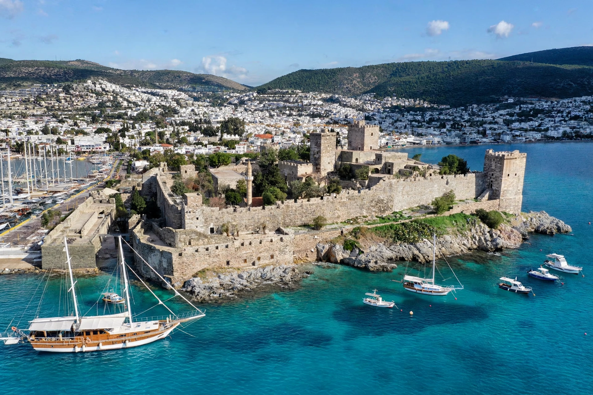

Bodrum Castle

| Castle of St Peter | |
| Location | Bodrum, Muğla Province, Turkey |
|---|---|
| Built | 1402–1522 |
| Built by | Knights Hospitaller |
| Current use | Museum of Underwater Archaeology |
Bodrum Castle (Turkish: Bodrum Kalesi), also known as the Castle of St Peter, is a medieval fortress in the port city of Bodrum in southwest Turkey. It was built from 1402 onwards by the Knights Hospitaller (the Knights of St John), who constructed it on the site of ancient Halicarnassus, incorporating green schist and marble taken from the ruins of the Mausoleum at Halicarnassus, one of the Seven Wonders of the Ancient World.
History
The knights, who held the castle as their principal stronghold on the Anatolian mainland, built the fortress under the direction of the German architect Heinrich Schlegelholt. Each "langue" (national division) of the order was responsible for a tower, and the castle's towers — English, French, German, Italian, and Spanish — still bear the coats of arms of their commanders. The chapel, built in Gothic style, was among the first parts completed.
The castle withstood attacks in 1455 and 1480, when the Ottomans under Sultan Mehmed II and later Mesih Pasha assaulted it without success. After the fall of Rhodes in 1522, however, the knights surrendered Bodrum to Suleiman the Magnificent, and the castle passed into Ottoman hands. The chapel was converted into a mosque with the addition of a minaret.
Museum of Underwater Archaeology
Since 1962 the castle has housed the Bodrum Museum of Underwater Archaeology, one of the most important museums of its kind. Its exhibits include the Uluburun shipwreck — a Late Bronze Age vessel of the 14th century BC carrying copper and tin ingots, Canaanite jars, and luxury goods — and the Glass Wreck Hall, displaying a Byzantine ship that sank at Serçe Limanı in the 11th century AD. Finds from excavations led by George Bass and the Institute of Nautical Archaeology form the core of the collection.
The castle occupies a rocky promontory between Bodrum's two harbours and is a landmark of the town, hosting cultural festivals and concerts.
See also: Knights Hospitaller